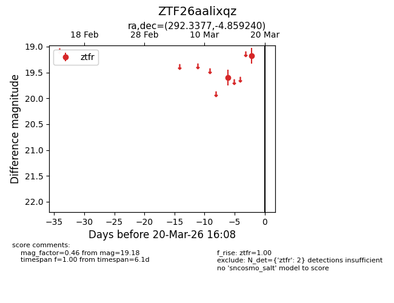
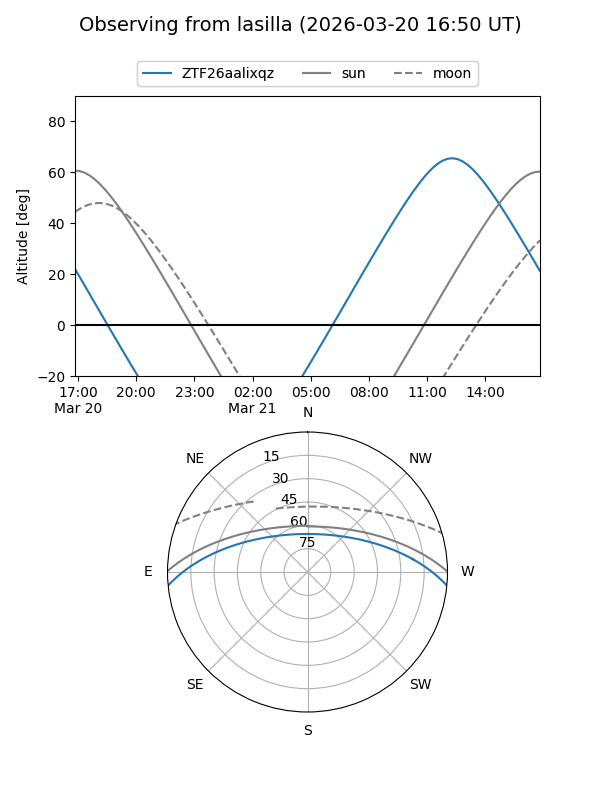
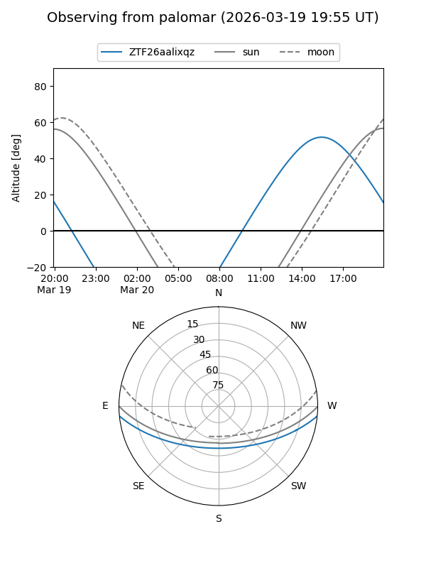
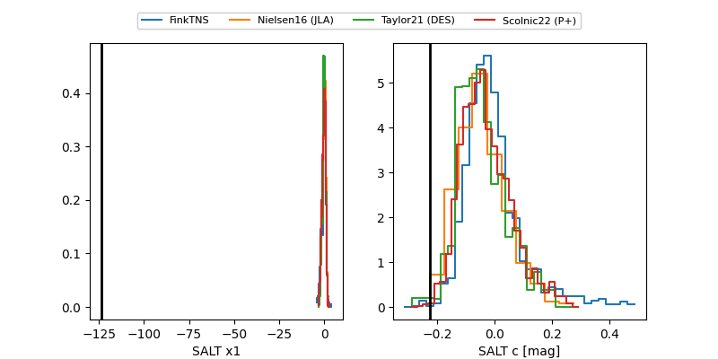

ZTF26aalixqz
Target ZTF26aalixqz at 2026-03-20 16:09
Aliases and brokers:
FINK: link
Lasair: link
ALeRCE: link
alt names
ZTF26aalixqz (ztf,fink_ztf)
Coordinates:
equatorial (ra, dec) = 292.3377,-4.85924
equatorial (HMS+DMS) = 19:29:21.04,-04:51:33.26
galactic (l, b) = (32.8986,-10.64101)
Flags:
Photometry:
last ztfr=19.18
2 ztfr detections
Lightcurve

Visibility


Additional plots
